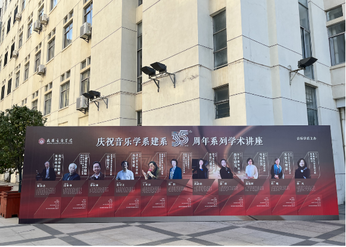
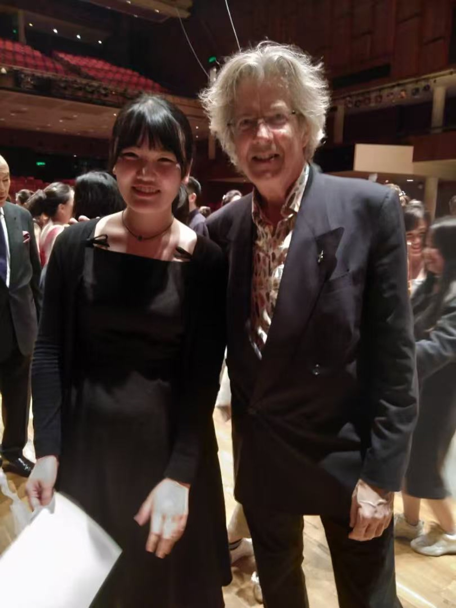
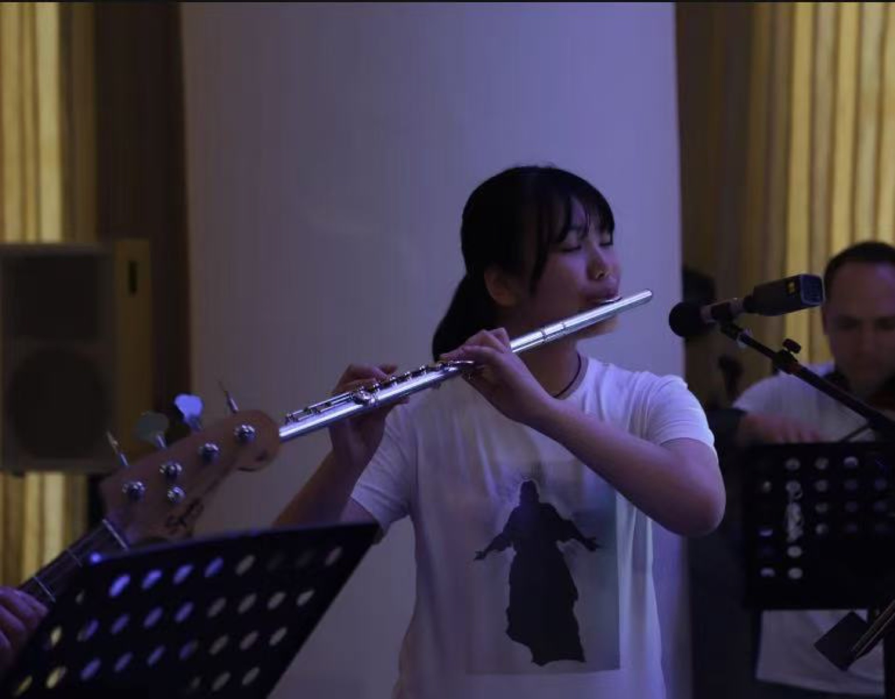

03
中国
WUHAN
♩
フルートとの出会い
私が音楽を始めたのは5歳のときで、最初はピアノを習い始めました。その後、8歳でフルートと出会い、本格的な学習をスタートさせました。
高校進学の際、より専門的に音楽を学びたいと考え、武漢音楽学院附属中学校へ進学しました。
附属中学校では、演奏技術の向上にとどまらず、音楽理論、ソルフェージュ、アンサンブルなど、体系的な専門教育を受けました。この時期の基礎的な訓練が、その後の音楽大学での学習や音楽学研究の揺るぎない土台となっています。
基礎訓練から専門的な学びへ
フルートを学び始めた当初は、音を安定して出すことや息をコントロールすることに苦労しました。しかし、毎日の基礎練習を続ける中で、少しずつ自分の身体と楽器の関係を理解できるようになり、演奏することの楽しさと達成感を感じるようになりました。
附属中学校での学びは、単に演奏技術を磨くだけではありませんでした。音楽理論やソルフェージュ、アンサンブルを体系的に学ぶことで、作品を聴く力、読み解く力、他者と音楽を共有する力が育ちました。




武漢で過ごした形成期
中国での学生生活は、演奏者としての基礎と研究者としての関心が重なり始めた時期でした。日々の練習、授業、仲間との交流を通して、音楽を専門的に学ぶ覚悟と、自分の進む方向が少しずつ形になっていきました。
WUHAN CONSERVATORY OF MUSIC
PAGE 03